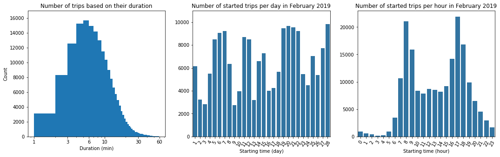
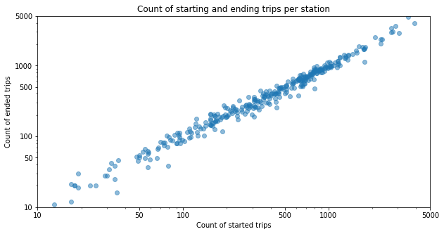
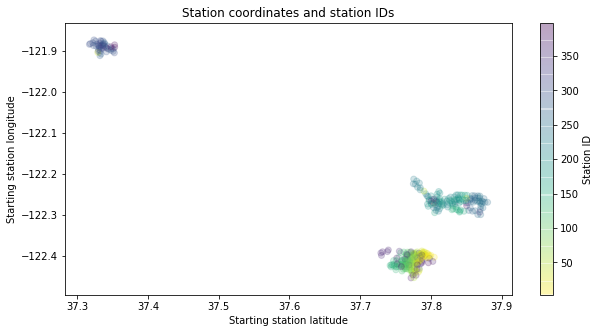
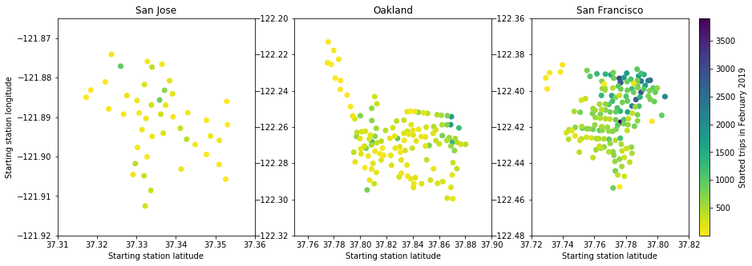

In this project I analyzed the data of a bike sharing service and performed valuable data visualizations. The objective is to find insights in the data so the service provider can improve and ensure the quality of its service.
The motivation of this project is to build some interesting and insightful data visualizations and tell a story around this data. The data was given in a csv-file and first I did some data assessing and cleaning to build a good fundament for the following analysis. I then performed an extensive exploratory data analysis which contained a uni-, bi- and multivariate analysis for finding insights in the data. After this I realized a explanatory data analysis where I focused on the main findings in the data.
Tools:
For the bike rental service it should be from high interest which stations are mostly frequented and are there some patterns in the bike usage. With knowing this, the resources can be better allocated and a good service quality can be ensured. For example, bikes could be better distributed to the stations so the users will always find a bike at the station of interest. It can be seen that there is a different number of started trips depending on the day in the week and the hour of the day. Also stations differ in started and ended trip counts. The users are mostly from type subscriber and gender men. After inspecting the bivariate analysis there are some insights we can use to drive multivariate analysis. From the perspective of the bike sharing service, there are some stations that are highly frequented and others not. Also, it seems that there is a difference in usage behavior (trip duration) between the the types customer and subscriber. Other user variables do not seem to influence the behavior, despite the fact that there are much more male users than female. The multivariate analysis shows that there is a connection between some stations. Stations can be identyfied which are highly used as both starting and ending points of the trip. Those stations can be grouped into three main clusters. Between those clusters the stations are highly interconnected - and also there a single stations with a high frequency. For ensuring a good service quality it should be ensured that those stations have enough bikes, especially during the morning and afternoon - the hours that are mostly frequented. It turns out that customer type users who show a different behavior than subscribers (longer trips) cannot be connected to a special location and occur in the whole system regularly.




The goal of this analysis was to provide valuable information for a bike sharing service provider to ensure service quality and improve the service. For this purpose following questions are from interest:
The analysis shows that there is a high difference in the frequency in the use of stations. The data shows that stations are generally higher or lower frequented. With this in mind, stations can be identifyied that have a crucial role in the system. Furthermore clusters of stations can be identifyied that are highly connected to each other. In those clusters the visualizations show the stations that are from particular interest. For improving the service the provider should pay attention to those stations and ensure the availability of bikes. Also data shows a usage pattern of the service depending on the day of the week and time of the day. During the week the service is higher frequented as well as in the morning and afternoon hours. Finally users from type customers have a different usage behavior than subscribers by having a longer mean duration of the trips. All this information can be used to ensure the quality of the service by recognising potential bottlenecks in the service and provide the designated stations with sufficient ressources.